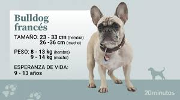

HTML5 Rigoberto

4.792 Liked
Like by 4geeksAcademy, HTML5 and 4.791 others
He French bulldog is a bright, loving and charming breed. He doesn't bark much, but he is an excellent watchdog. He doesn't need much exercise and takes..